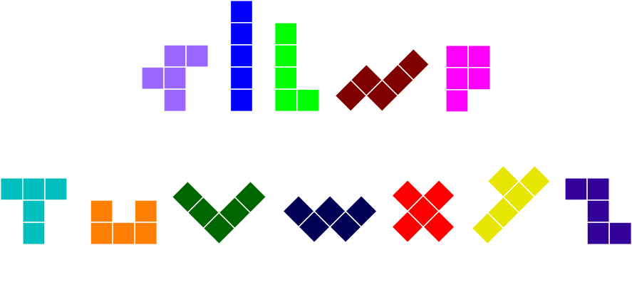

“Community-Oriented Talk”
(Update 1; see the list of updates.)
©2009, licensed under a Creative Commons Attribution/Share-Alike (BY-SA) license.
In the text below, the bold arrow symbols ("➔") indicate when to advance the slide. If just reading this text, you can ignore them.
Language Choice
Nie mówię po polsku :-(
- Français
- 日本語
- English
➔
I don't speak Polish.
➔
(French?)
➔
(Japanese?)
➔
But luckily for me the official language of RuPy is English.
So here we go.
Thanks!
First, I want to thank the organizers of RuPy for inviting me, and more importantly, for the conference itself. They do an amazing amount of work. I know firsthand how much work goes into a conference. So, thanks!
➔
Dziękuję!
And that's the last of my Polish!
Dziękuję!
Possible Talk Titles
Ask not what your community can do for you — ask what you can do for your community
No — too long, and I can't do a Kennedy accent.
Yesterday I was doing some sight-seeing, guided by Jakub Nowak, and I noticed there's a street named after the American President Franklin Delano Roosevelt. I asked Jakub if there's a street named after John F. Kennedy. It's a popular street name; there's one in Montreal. Then I realized that Kennedy's era coincided with the era of the Soviet Union -- and I'm pretty sure they would not have been happy about it!
Community: Yes We Can!
How to Build a Great Community
How to Be a Good Member of Your Community
This is closer, but too general a topic for me to speak on. I haven't thought about the abstract topic that deeply. Here's a good resource (I think). (I haven't read it yet!)
➔ ➔ ➔
How to Become an Invited Speaker
Now this is one topic I can speak about!
I don't have a sure-fire method, so I'll tell you about my journey.
Let's start over at the beginning...
Who is this guy?
First, how to pronounce my name.
➔ ➔
(Goodgers and badgers are mortal enemies.)
Who is this guy?
µCelebrity?
But I think that people like Guido van Rossum and Yukihiro “matz” Matsumoto are commonly referred to as micro-celebrities.
➔
If they're micro-celebrities, then I must be a nano-celebrity.
➔
nCelebrity!
Background
My first exposure to Python came when I was working in Tokyo at a small company doing SGML data processing, specializing in East Asian languages (Japanese, Chinese, Korean). It was a high-stress but fun environment, where the work always had to be done yesterday. We'd write code and run it on client data (which was usually garbage), and debug the system until it ran correctly. As soon as the job ran correctly, the job was done. There were a lot of one-off programs, but many were not insignificant. A typical day saw me coding in Scheme, PostScript, shell, and Perl. Lots of Perl. From single-line filters to a multi-thousand-line program that parsed ASCII-art syntax diagrams. Pages and pages of ASCII-art syntax diagrams. I used to have nightmares about them.
I was immersed in Perl for over 2 years.
Perl used to fit my brain. But by the end, I was sick of Perl; it just didn't scale, and maintenance of my own code was a nightmare (let alone other people's code). And I think that I wrote good, clean code! After 2 and a half years of always-on coding, I was burnt out. My brain rejected Perl.
Toward the end of my stay in Japan, probably in 1997, a colleague picked up a copy of the first (1996) edition of O'Reilly's "Programming Python" by Mark Lutz and was impressed. I took a look and liked what I saw, but was so busy that I didn't have time to get into it then. I moved back to Canada in 1998 with my wife and infant son, took some time off, picked up my own copy of "Programming Python", and delved deep. I really liked what I saw, and started a Python rewrite of a project I'd written in university in Pascal to learn the language. It was a Pentominoes puzzle solver.
➔
Pentominoes:
Pentominoes are all possible shapes formed from 5 adjacent squares. I'm sure you've seen their cousins, the tetrominoes -- they're the shapes in the game Tetris.
I got the pentominoes solver program working well enough -- it was slow and buggy, but the project had served its purpose: I was now comfortable coding in Python.
With Python, the code flowed. Maintenance was a breeze. I found myself writing code that would often just work, the first time. As the saying goes, Python fits my brain. I was able to tackle large projects much more easily than ever before. And thanks to Python, programming became fun again.
Had I known about Ruby then, perhaps I would have embraced it as a "nicer Perl". Who knows? But I didn't know about it (even though I lived in Japan when it was first developed!), and now I've grown used to significant whitespace. Ruby isn't for me, but to those of you who love it, I say "Great!" I'm happy that you have adopted another open-source community-built language, growing the open source community, instead of relying on something proprietary.
While first learning Python I discovered docstrings and started looking around for autodocumentation systems to exploit them. The choices available then weren't exactly what I was looking for. It seemed that many people had tried their hand at autodocumentation, but nobody had produced anything sufficiently generic for my liking. Either the source code was imported (where I wanted it to be parsed), or the output was fixed (it should be flexible), or the markup was either deficient or cryptic and hard to read (it should be rich, yet implicit and easy to read). I foolishly took on this task, and eventually focused on the last aspect: the markup. Docutils & reStructuredText were born, and the rest is history (http://docutils.sf.net/docs/ref/rst/introduction.html#history).
Background
Docutils:
➔ ➔
Docutils and its reStructuredText markup language are now used to generate Python's documentation (with Sphinx) and the Python.org website. Docutils can even be used to make slides; I used it for these slides!
Docutils itself still doesn't do Python autodocumentation, but some autodocumentation systems use Docutils, notably Epydoc and Sphinx. Is one of them the "ultimate autodocumentation tool"? Not sure yet...
My most significant community roles have been:
- as an editor of Python Enhancement Proposals (a.k.a. PEPs),
- as chair of PyCon 2008 & 2009,
- and as an officer and a Director of the Python Software Foundation.
I was nominated and elected to membership of the Python Software Foundation in 2003. I became an officer (Assistant Secretary in 2005 and Secretary since 2006), and I was a Director from 2006 to 2009. For almost a year I worked full-time for the PSF as Conference Coordinator.
I now program almost exclusively in Python. A few years ago I revisited my Pentominoes solver, using a different approach, which works very well. That project is called "Polyform Puzzler":
➔ ➔
Polyform Puzzler:
If we have time, I'll show you some pretty pictures later.
If you visit the Polyform Puzzler site, you'll see a link to a video of me giving a presentation about it to the Montreal Python users group. (Don't watch it now though! The network can't take it!)
Currently I'm doing freelance consulting.
But that's more than enough about me. I'm here to talk to you about community.
What is Community?
C = ∑ effort(members)
Put in the form of an equation, a community consists of the sum of the efforts of its members.
But equations don't apply well to people.
2 Basic Rules to Building Community
1. Be a participant.
2. Don’t be a jerk.
Be a Participant
To help your community, be more than a user. You need to give of yourself. Be an active participant.
The FOSS community can be thought of as a gift culture.
A Linux operating system is worth between 30 Euros and billions.
30 Euros is about the cost of a pre-installed Windows operating system, so the value of Linux to end-users is at least that much.
Ohloh.net says the Linux 2.6 kernel is worth over $137,000,000, or 92 million Euros.
Add in all the applications that come with a typical Linux distribution, and the total value is easily in the billions. All free to us.
Python and Ruby are free, but both took uncounted thousands of person-hours to build. All this time, freely given to us.
Do you give, or do you only take?
Don't get me wrong, there's nothing wrong with being a consumer of Free and Open Source software projects. There is no compulsion for anyone to participate. But to make the community better, active participation is the key.
Participation can take many forms:
- You can write code, fix bugs, or help diagnose bugs.
- You can report bugs!
- You can write documentation.
- You can help people out on mailing lists and other forums.
- You can tell people about your favorite projects, or about Free & open source software in general.
- You can attend conferences, like this one -- there won't be a conference if nobody comes!
One measure of a project's success is the number of people using it! And not everybody can be a core developer. Today's consumer may be tomorrow's contributor!
I'm not a C coder -- any more (by choice). So I can't contribute code to the core Python interpreter, which is written in C. But I volunteered in other ways, allowing a bit more time for the core developers to do their work. Thus I benefit from those who are C coders -- their work protects me from unnecessary suffering.
Give freely and honestly. Be generous. Don't give with the expectation of getting anything back. If you expect a return, it won't come.
I think that if it's free & honest, no matter how much you give, you get back far more. The more you give, the more you are given, freely. People recognize honest generosity.
Don't Be a Jerk
Everyone is a jerk sometimes. I've been a jerk, you've been a jerk.
Nobody likes a jerk.
Nobody listens to jerks.
If somebody tells you you're being a jerk, listen to them. They're probably right.
Don't be a jerk. Just don't.
That's it!
That's it in a nutshell.
But I still have time, so I'll elaborate.
Specific Rules
In no particular order...
➔
Here are some specific rules and examples that I hope will help you. I learned many of these rules by breaking them. Please learn from my experience!
Find Your Passion
Take Risks
The PyCon conference grow from about 400 attendees in 2006, to 600 attendees in 2007, to over 1000 in 2008. In 2008 the conference hotel wasn't big enough to handle over 1000 Pythonistas, and keep them happy. The main problem was the lack of dining space: there wasn't enough space for everyone to sit down to a proper hot lunch. So we had boxed lunches, and people were sitting in the hallways, anywhere they could find a spot.
By this time, we already had a contract with this hotel for PyCon 2009. We fully expected attendance to grow further -- maybe not a 75% increase again, but we expected 1200 people in 2009. So we decided to add a second nearby hotel. This was a big risk. Had there been a disaster, it could have wiped out the PSF's finances.
As it was, the fall of 2008 saw a huge financial crisis in the United States. We had trouble getting sponsors for PyCon 2009. And we saw a 10% decline in attendance. The net result was that we lost some money. A significant amount, but not enough to bankrupt the PSF.
When I chaired the conference in 2008, I found that the job had grown to the point where it wasn't feasible for a volunteer to handle. Also, there were a lot of things the PSF wanted to do but didn't have the time for. So I proposed that the PSF hire me, and they did. Unfortunately, with the loss from PyCon, the PSF Board of Directors decided they couldn't afford to keep me on the payroll, so my employment ended in September.
And although I no longer work full-time for the PSF, I still help with PyCon, and I'm still the Secretary.
(By the way, I'm looking for work!) ➔
Embrace Failure
Don't fear failure, learn from it.
We learn the most from our mistakes. Don't be afraid to take risks, and make mistakes!
Encourage Others
Don't be the one and only lord and master of your project. If you are, you'll be the bottleneck of your project, and you'll stifle your project's growth.
Invite the participation of others. Give them authority and responsibility. Remove the limitation of what one person can do, and leverage your community.
Be Tolerant
Mentioned earlier: be tolerant of consumers.
Another example, be tolerant of jerks. Help them grow and become non-jerks, and eventually good community members.
Be Sincere
Be genuine, not phony.
Be interested, and focused.
Be a Leader
Being a leader doesn't mean you have to start a new project or fight for leadership of an existing one.
Instead, identify an issue in a project. Own the issue. Don't wait for someone else to "get around to it". There's always a shortage of "round tuits". ➔
Be a Team Member
Be Persistent
If you see an issue, keep pressing until it's solved.
Of course, don't be a jerk about it!
But Know When to Let Go
Admit When You're Wrong
Admit it and move on.
We're all wrong sometimes. People respect those who admit their mistakes.
Be Consistent & Reliable
Have a Back-Up Plan
Recruit & Mentor
added 2009-11-08
Make a Name For Yourself
Beware of Marketing & Hype
Traditional marketing & hype don't work with developers and other techno-geeks.
(added 2009-11-08) Alternative explanation: Geeks are naturally skeptical. Hype will be examined closely and carefully, and if the reality doesn't match up to the hype, your project (and your own) reputation will suffer. Great volumes of ridicule will follow.
At a one of the PyCons in Dallas, 2006 I think, after our conference days were over many people stayed for a few more days to work on projects: we call these "development sprints". A group of vacuum-cleaner salespeople moved in to the big rooms for their conference. It seemed to consist of people on stage yelling at the crowd to "Give 110%!" And the crowd yelled back, making as much noise as they could. They even had noise-makers, plastic clapping hands.
➔

We Pythonistas were amazed and perplexed by this display -- were these people the same species as us? We just couldn't understand the point.
Traditional marketing sounds phony to techno-geeks. Promote your project or community, but do it honestly and simply, without the trappings of marketing.
Communicate
Write a lot. Start a blog. Write articles for technical magazines or websites. Write a book. You won't get rich, but you'll get your name out there. And you'll be promoting the community.
There's only one way to improve your writing: write!
Listen to your community members. Ask first before implementing significant changes.
Respect the Community
This is an important, higher-level version of "don't be a jerk".
At every PyCon, we are always trying new ideas. Over the years we have added tutorial days, plenary sessions for lightning talks, and invited summit meetings. We increased the number of tracks to 4 and this year, to 5. This year we will also have a poster session.
In 2008, we tried making the conference more valuable to our sponsors. We added an expo hall for sponsors to interact directly with attendees. We added sponsorship to each keynote talk (I said "this talk is sponsored by XYZ Corp. XYZ makes great software to do ABC. And they're hiring!"). We put aside one lightning talk slot for each sponsor.
Well, the expo hall worked out fine. Those that were interested went, and those that weren't, didn't. But the talk sponsorship and sponsor lightning talks didn't work well at all. There was a lot of blowback, or negative feedback, from the community.
We made a mistake. We learned our lesson, and toned down sponsorship in 2009. We had snacks in the expo hall, which made the sponsors happy. But we didn't have any forced commercial messages. We respected the community. PyCon 2009 was widely hailed as the best ever.
Here's another example. Every year at PyCon we give each attendee a conference bag which contains a conference T-shirt and materials from our sponsors. Traditionally, people who arrive early will help stuff these bags: we create a long assembly line, and each person grabs a bag and fills it with one of each item. I thought this was a tedious exercise, so in 2008 I suggested that we use a temporary employment agency to hire some locals to do the stuffing for us. The objections came swiftly and loudly: the bag stuffing was a cherished event, a social gathering to begin the conference.
Had I gone ahead and hired people, it would have been disrespecting the community. By asking first, I showed respect, and learned a valuable lesson.
Recognition: Give Credit & Thanks
added 2009-11-08
Conclusion
The two basic rules again:
Any questions?
Thanks again to the RuPy organizers for giving me this opportunity to speak to you, and to visit a part of the world I've never been to before!
➔
List of Updates
Presented on 2009-11-07 in Poznan, Poland, at RuPy 2009.
- Update 1, 2009-11-08: from questions and answers with RuPy
attendees.
- Added Recognition: Give Credit & Thanks
- Added Recruit & Mentor
- Added the "alternative explanation" to Beware of Marketing & Hype
- Update 2, 2009-12-02: added copyright notice & CC-BY-SA license statement.